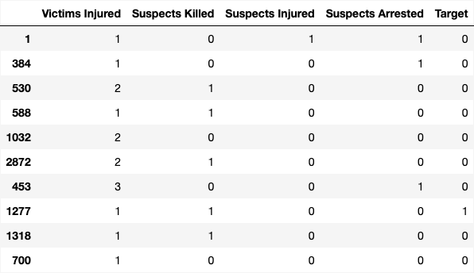
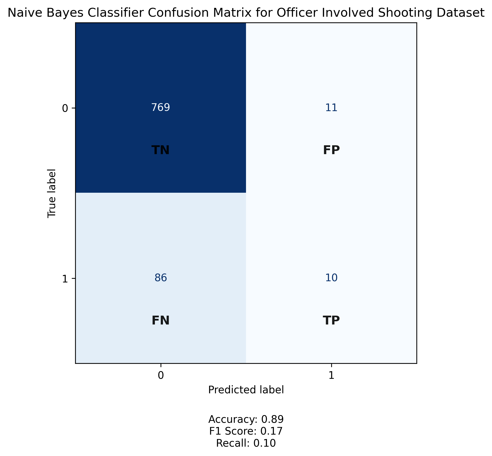

Officer Involved Shootings

Training Data
Testing Data

Confusion Matrix
Conclusions
From the confusion matrix and performance metrics of the Naive Bayes Classifier applied to the officer-involved shooting dataset, we see that the model achieves relatively high overall accuracy (89%) but performs poorly in identifying actual shooting incidents. The classifier correctly identifies a large number of true negatives (769), meaning it is effective at recognizing non-shooting cases. However, it only detects 10 true positives and misses 86 actual incidents, resulting in a low recall score of 0.10.
The F1 score of 0.17 further reflects the model's limited ability to balance precision and recall, suggesting that while it avoids many false alarms, it fails to capture the majority of true shooting events. This imbalance highlights a common challenge in modeling rare but critical outcomes, where high accuracy can mask poor performance in identifying the cases that matter most.
These results indicate that the Naive Bayes model may not be suitable for reliably detecting officer-involved shootings without further refinement. Enhancing its sensitivity could involve addressing class imbalance, incorporating more nuanced features, or exploring alternative algorithms better equipped to handle skewed data distributions.